전산응용기계제도기능사 (2012-02-12 기출문제)
1과목: 기계재료 및 요소
1. Al-Si 계 합금인 실루민의 주조 조직에 나타나는 Si의 거친 결정을 미세화시키고 강도를 개선하기 위하여 개량처리를 하는데 사용되는 것은?
- Na
- Mg
- Al
- Mn
(정답률: 49%)

2. 금속을 상온에서 소성변형시켰을 때, 재질이 경화되고 연신율이 감소하는 현상은?
- 재결정
- 가공경화
- 고용강화
- 열변형
(정답률: 74%)
3. 강을 충분히 가열한 후 물이나 기름 속에 급랭시켜 조직변태에 의한 재질의 경화를 주목적으로 하는 것은?
- 담금질
- 뜨임
- 풀림
- 불림
(정답률: 86%)
4. 공구강의 구비조건 중 틀린 것은?
- 강인성이 클 것
- 내마모성이 작을 것
- 고온에서 경도가 클 것
- 열처리가 쉬울 것
(정답률: 74%)
5. 황동의 자연균열 방지책이 아닌 것은?
- 수은
- 아연 도금
- 도료
- 저온풀림
(정답률: 58%)
6. 다음 합성수지 중 일명 EP라고 하며, 현재 이용되고 있는 수지 중 가장 우수한 특성을 지닌 것으로 널리 이용되는 것은?
- 페놀 수지
- 폴리에스테르 수지
- 에폭시 수지
- 멜라민 수지
(정답률: 73%)
7. 스텔라이트계 주조경질합금에 대한 설명으로 틀린 것은?
- 주성분이 Co 이다.
- 단조품이 많이 쓰인다.
- 800℃ 까지의 고온에서도 경도가 유지된다.
- 열처리가 불필요하다.
(정답률: 46%)
8. 기계요소 부품 중에서 직접 전동용 기계요소에 속하는 것은?
- 벨트
- 기어
- 로프
- 체인
(정답률: 71%)
9. 수나사의 호칭치수는 무엇을 표시하는가?
- 골지름
- 바깥지름
- 평균지름
- 유효지름
(정답률: 79%)
10. 다음 나사 중 백래시를 작게 할 수 있고 높은 정밀도를 오래 유지할 수 있으며 효율이 가장 좋은 것은?
- 사각 나사
- 톱니 나사
- 볼 나사
- 둥근 나사
(정답률: 62%)
2과목: 기계가공법 및 안전관리
11. 다음 중 핀(Pin)의 용도가 아닌 것은?
- 핸들과 축의 고정
- 너트의 풀림 방지
- 볼트의 마모 방지
- 분해 조립할 때 조립할 부품의 위치결정
(정답률: 72%)
12. 다음 스프링 중 너비가 좁고 얇은 긴 보의 형태로 하중을 지지하는 것은?
- 원판 스프링
- 겹판 스프링
- 인장 코일 스프링
- 압축 코일 스프링
(정답률: 59%)
13. 지름이 6cm 인 원형단면의 봉에 500kN의 인장하중이 작용할 때 이 봉에 발생되는 응력은 약 몇 N/mm2인가?
- 170.8
- 176.8
- 180.8
- 200.8
(정답률: 55%)
14. 평벨트 풀리의 구조에서 벨트와 직접 접촉하여 동력을 전달하는 부분은?
- 림
- 암
- 보스
- 리브
(정답률: 46%)
15. 회전하고 있는 원동 마찰차의 지름이 250㎜이고 종동차의 지름이 400㎜일 때 최대 토크는 몇 N · m인가? (단, 마찰차의 마찰계수는 0.2이고 서로 밀어 붙이는 힘은 2kN이다.)
- 20
- 40
- 80
- 160
(정답률: 40%)
16. 바이트에서 칩 브레이커를 만드는 이유는?
- 선반에서 바이트의 강도를 높이기 위하여
- 작업자 안전을 위해 칩을 짧게 끊기 위하여
- 바이트와 공작물의 마찰을 적게 하기 위하여
- 절삭 속도를 빠르게 하기 위하여
(정답률: 76%)
17. 보링머신에 의한 작업으로 적합하지 않은 것은?
- 리밍
- 태핑
- 드릴링
- 기어가공
(정답률: 67%)
18. 다음 중 윤활제의 구비조건이 아닌 것은?
- 온도 변화에 따른 점도의 변화가 클 것
- 한계 윤활상태에서 견딜 수 있는 유성이 있는 것
- 산화나 열에 대하여 안정성이 높을 것
- 화학적으로 불활성이며 깨끗하고 균질할 것
(정답률: 78%)
19. 밀링 분할법의 종류에 해당되지 않은 것은?
- 직접 분할법
- 단식 분할법
- 차동 분할법
- 미분 분할법
(정답률: 73%)
20. 해머작업을 할 때의 안전사항 중 틀린 것은?
- 손을 보호하기 위하여 장갑을 낀다.
- 파편이 튀지 않도록 칸막이를 한다.
- 보호안경을 착용한다.
- 해머의 끝 부분이 빠지지 않도록 쐐기를 한다.
(정답률: 69%)
21. CNC공작기계의 서보기구 중 서보모터에서 위치와 속도를 검출하여 피드백시키는 방식으로 일반적인 CNC공작기계에 가장 많이 사용되는 방식은?
- 개방회로 방식
- 반폐쇄회로 방식
- 폐쇄회로 방식
- 복합회로 서보 방식
(정답률: 56%)
22. 다음 중 센터리스 연삭기는 어느 종류에 속하는가?
- 나사 연삭기
- 평면 연삭기
- 외경 연삭기
- 성형 연삭기
(정답률: 52%)
23. 그림과 같은 사인 바(sine bar)를 이용한 각도 측정에 대한 설명으로 틀린 것은?
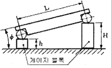
- 게이지 블록 등을 병용하고 3각함수 사인(sine)을 이용하여 각도를 측정하는 기구이다.
- 사인바는 롤러의 중심거리가 보통 100㎜ 또는 200㎜로 제작한다.
- 45˚ 보다 큰 각을 측정할 때에는 오차가 적어진다.
- 정반 위에서 정반면과 사인봉과 이루는 각을 표시하면 sinφ=(H-h)/L 식이 성립한다.
(정답률: 71%)
24. 나사를 조일 때 드라이버를 안전하게 사용하는 방법으로 틀린 것은?
- 날 끝이 홈의 나비와 길이보다 작은 것을 사용한다.
- 날 끝은 이가 빠지거나 동그랗게 된 것을 사용 않는다.
- 나사를 조일 때 나사 탭 구멍에 수직으로 대고 한 손으로 가볍게 잡고 작업한다.
- 용도 외에 다른 목적으로 사용하지 않는다.
(정답률: 63%)
25. 일반적으로 슈퍼피니싱의 가공액으로 사용되지 않는 것은?
- 경유
- 스핀들유
- 동물성유
- 기계유
(정답률: 67%)
3과목: 기계제도
26. 다음 기계요소 중 길이 방향으로 단면할 수 있는 부품으로 묶은 것은?
- 리브, 바퀴의 암, 기어의 이
- 볼트, 너트, 작은 나사
- 축, 핀, 리벳, 키
- 부시, 칼라, 베어링
(정답률: 58%)
27. 다음과 같이 기하 공차가 기입되었을 때 설명으로 틀린 것은?
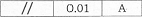
- 0.01은 공차값이다.
- //은 모양 공차이다.
- //은 공차의 종류 기호이다.
- A는 데이텀을 지시하는 문자 기호이다.
(정답률: 80%)
28. 부분 확대도의 도시 방법으로 틀린 것은?
- 특정한 부분의 도형이 작아서 그 부분을 확대하여 나타내는 표현 방법이다.
- 확대할 부분을 굵은 실선으로 에워싸고 한글이나 알파벳 대문자로 표시한다.
- 확대도에는 치수기입과 표면 거칠기를 표시할 수 있다.
- 확대한 투상도 위에 확대를 표시하는 문자 기호화 척도를 기입한다.
(정답률: 67%)
29. 다음 그림에서 부품 ①의 공차와 부품 ②의 공차가 순서대로 바르게 나열된 것은?
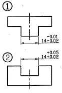
- 0.01, 0.02
- 0.01, 0.03
- 0.03, 0.03
- 0.03, 0.07
(정답률: 69%)
30. 끼워맞춤 방식에서 축의 지름이 구멍의 지름보다 큰 경우 조립 전 두 지름의 차를 무엇이라고 하는가?
- 죔새
- 틈새
- 공차
- 허용차
(정답률: 76%)
31. IT 기본 공차에 대한 설명으로 틀린 것은?
- IT 기본 공차는 치수 공차와 끼워맞춤에 있어서 정해진 모든 치수 공차를 의미한다.
- IT 기본 공차의 등급은 IT01부터 IT18까지 20등급으로 구분되어 있다.
- IT 공차 적용시 제작의 난이도를 고려하여 구멍에는 ITn-1, 축에는 ITn 을 부여한다.
- 끼워맞춤 공차를 적용할 때 구멍일 경우 IT6~IT10이고, 축일 때에는 IT5~IT9 이다.
(정답률: 63%)
32. 제 3각법으로 표시된 다음 정면도와 측면도를 보고 평면도에 해당하는 것은?
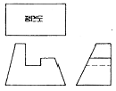
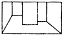
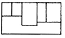
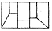
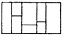
(정답률: 77%)
33. 다음 설명 중 반지름 치수 기입 방법으로 옳은 것은?
- 반지름 치수를 표시할 때에는 치수선의 양쪽에 화살표를 모두 붙인다.
- 화살표나 치수를 기입할 여유가 없을 경우에는 중심 방향으로 치수선을 연장하여 긋고 화살표를 붙인다.
- 반지름이 커서 그 중심 위치까지 치수선을 그을 수 없을 때에는 자유 실선을 원호 쪽에 사용하여 치수를 표기 한다.
- 반지름 치수는 중심을 반드시 표시하여 기입해야 한다.
(정답률: 50%)
34. 도면을 접어서 사용하거나 보관하고자 할 때 앞부분에 나타내어 보이도록 하는 부분은?
- 부품 번호가 있는 부분
- 표제란이 있는 부분
- 조립도가 있는 부분
- 도면이 그려지지 않은 뒷면
(정답률: 73%)
35. 스케치를 할 물체의 표면에 광명단을 얇게 칠하고 그 위에 종이를 대고 눌러서 실제의 모양을 뜨는 스케치 방법은?
- 프린트법
- 모양뜨기 방법
- 프리핸드법
- 사진법
(정답률: 65%)
36. 제거가공 또는 다른 방법으로 얻어진 가공 전의 상태를 그대로 남겨두는 것만을 지시하기 위한 기호는?
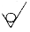
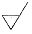
(정답률: 65%)
37. 다음 등각도를 3각법으로 투상할 때 평면도로 맞는 것은?
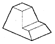
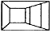
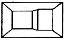
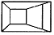
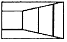
(정답률: 55%)
38. 치수 보조 기호의 SØ는 무엇을 나타내는가?
- 표면
- 구의 반지름
- 피치
- 구의 지름
(정답률: 85%)
39. KS B 0001에 규정된 도면의 크기에 해당하는 A열 사이즈의 호칭에 해당 되지 않는 것은?
- A0
- A3
- A5
- A1
(정답률: 74%)
40. 다음 그림은 표면거칠기의 지시이다. 면의 지시기호에 대한 지시사항에서 D의 위치에 나타내는 것은?
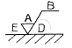
- 표면 파상도
- 줄무늬 방향 기호
- 다듬질 여유 기입
- 중심선 평균 거칠기 값
(정답률: 74%)
41. 가는 실선을 사용하는 선의 용도에 해당하지 않는 것은?
- 기호 및 지시사항을 기입하기 위하여 끌어내는데 쓰인다.
- 도형의 중심선을 간략하게 표시하는데 쓰인다.
- 수면, 유면 등의 위치를 명시하는데 쓰인다.
- 도시된 단면의 앞쪽에 있는 부분을 표시하는데 쓰인다.
(정답률: 34%)
42. 다음 선의 용도에 의한 명칭 중 선의 굵기가 다른 것은?
- 치수선
- 지시선
- 외형선
- 치수보조선
(정답률: 78%)
43. 다음 도면에서 표현된 단면도로 모두 맞는 것은?
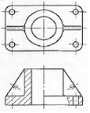
- 전단면도, 한쪽 단면도, 부분 단면도
- 한쪽 단면도, 부분 단면도, 회전도시 단면도
- 부분 단면도, 회전도시 단면도, 계단 단면도
- 전단면도, 한쪽 단면도, 회전도시 단면도
(정답률: 66%)
44. 정면, 평면, 측면을 하나의 투상면 위에서 동시에 볼 수 있도록 그린 도법은?
- 보조 투상도
- 단면도
- 등각 투상도
- 전개도
(정답률: 72%)
45. 모양, 자세, 위치의 정밀도를 나타내는 종류와 기호를 바르게 나타낸 것은?
- 진원도 :
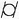
- 동축도 :
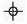
- 원통도 :
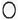
- 직각도 :
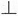
(정답률: 81%)
46. 스프로킷 휠의 도시법에 대한 설명으로 틀린 것은?
- 바깥지름은 굵은 실선, 피치원은 가는 1점 쇄선으로 도시한다.
- 이뿌리원을 축에 직각인 방향에서 단면 도시할 경우에는 가는 실선으로 도시한다.
- 이뿌리원은 가는 실선으로 도시하나 기입을 생략해도 좋다.
- 항목표에는 원칙적으로 이의 특성에 관한 사항과 이의 절삭에 필요한 치수를 기입한다.
(정답률: 54%)
47. 나사의 각 부를 표시하는 선에 대한 설명으로 틀린 것은?
- 수나사의 바깥지름과 암나사의 안지름은 굵은 실선으로 그린다.
- 수나사와 암나사의 골을 표시하는 선은 굵은 실선으로 그린다.
- 완전나사부와 불완전나사부의 경계선은 굵은 실선으로 그린다.
- 가려서 보이지 않는 나사부는 파선으로 그린다.
(정답률: 62%)
48. 나사의 종류를 나타내는 기호 중 틀린 것은?
- R : 관용 테이퍼 수나사
- S : 미니추어 나사
- UNC : 유니파이 보통나사
- TM : 29° 사다리꼴 나사
(정답률: 63%)
49. 배관도의 치수기입 요령으로 틀린 것은?
- 치수는 관, 관 이음, 밸브의 입구 중심에서 중심까지의 길이로 표시한다.
- 관이나 밸브 등의 호칭 지름은 관선 밖으로 지시선을 끌어내어 표시한다.
- 설치 이유가 중요한 장치에서는 단선 도시 방법을 이용한다.
- 관의 끝 부분에 왼나사를 필요로 할 때에는 지시선으로 나타내어 표시한다.
(정답률: 51%)
50. 스퍼기어를 축 방향으로 단면 투상할 경우 도시방법으로 틀린 것은?
- 이끝원은 굵은 실선으로 그린다.
- 피치원은 가는 1점 쇄선으로 그린다.
- 이뿌리원은 파선으로 그린다.
- 맞물리는 한 쌍의 기어의 이끝원은 굵은 실선으로 그린다.
(정답률: 75%)
51. 맞물리는 한 쌍의 평기어에서 모듈이 2 이고 잇수가 각각 20, 30일 때 두 기어의 중심거리는?
- 30㎜
- 40㎜
- 50㎜
- 60㎜
(정답률: 78%)
52. 테이퍼 핀의 호칭 지름은 표시하는 부분은?
- 핀의 큰 쪽 지름
- 핀의 작은 쪽 지름
- 핀의 중간 부분 지름
- 핀의 작은 쪽 지름에서 전체의 1/3 되는 부분
(정답률: 63%)
53. 코일 스프링의 제도방법 중 맞는 것은?
- 원칙적으로 하중이 걸린 상태로 그린다.
- 그림 안에 기입하기 힘든 사항은 일괄하여 요목표에 표시한다.
- 코일 스프링의 중간부분을 생략할 때는 생략부분을 파단선으로 긋는다.
- 특별한 단서가 없는 한 모두 왼쪽 감기로 도시한다.
(정답률: 56%)
54. 다음 그림에서 (가)부의 용접은 어떤 자세로 작업하는가?
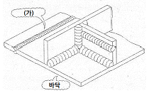
- 수평 자세
- 수직 자세
- 아래보기 자세
- 위보기 자세
(정답률: 65%)
55. 축을 제도하는 방법을 설명한 것이다. 틀린 것은?
- 긴 축은 단축하여 그릴 수 있고 길이는 실제 길이를 기입한다.
- 축은 일반적으로 길이 방향으로 절단하여 단면을 표시 한다.
- 구석 라운드 가공부는 필요에 따라 확대하여 기입 할 수 있다.
- 필요에 따라 부분 단면은 가능하다.
(정답률: 73%)
56. 베어링의 호칭 번호 6203Z에서 Z가 뜻하는 것은?
- 한쪽 실드
- 리테이너 없음
- 보통 틈새
- 등급 표시
(정답률: 60%)
57. 일반적인 CAD시스템에서 사용되는 좌표계가 아닌 것은?
- 직교 좌표계
- 타원 좌표계
- 극 좌표계
- 구면 좌표계
(정답률: 64%)
58. 3차원 물체를 외부형상 뿐만 아니라 내부구조의 정보까지도 표현하여 물리적 성질 등의 계산까지 가능한 모델은?
- 와이어 프레임 모델
- 서피스 모델
- 솔리드 모델
- 엔티티 모델
(정답률: 78%)
59. CAD시스템의 출력 장치가 아닌 것은?
- 스캐너
- 그래픽 디스플레이
- 프린터
- 플로터
(정답률: 68%)
60. 컴퓨터 시스템의 중앙처리 장치 구성요소가 아닌 것은?
- 보조기억장치
- 제어장치
- 연산장치
- 주기억장치
(정답률: 70%)